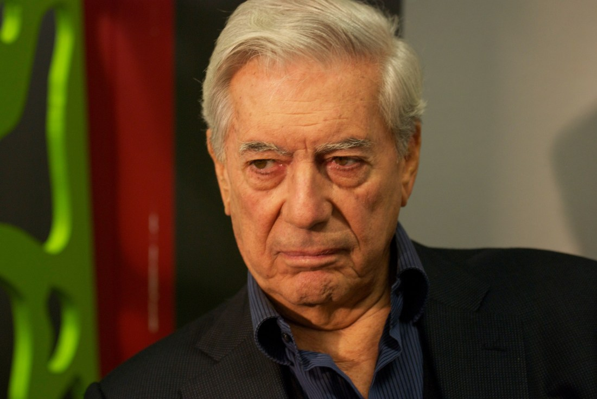

¿CUÁL ES LA ACUSACIÓN CONTRA LA DUEÑA DEL COLEGIO RÉBSAMEN?
El colapso puso al descubierto irregularidades en la construcción, en los permisos y verificación sobre la seguridad del edificio.
Riña en carnaval de Iztapalapa deja 1 muerto y 10 heridos; detienen a dos
Se inició un expediente por homicidio y lesiones por disparo de arma de fuego.
INE en Puebla ratifica candidatura de Miguel Barbosa a la gubernatura
Barbosa dijo que con esto se cierra "un capítulo complicado" e invitó a la reconciliación.
Autoridades detectan presunto enriquecimiento ilícito de Duarte y Karime Macías por 20 mdp
Por este caso, cuya investigación inició desde hace casi tres años, la FGR (antes PGR) solicitará en las próximas semanas nuevas órdenes de aprehensión a jueces federales.
-
Sacudida al Poder Judicial: Monreal propone reemplazar al Consejo de la Judicatura
El legislador presentará una iniciativa para reemplazar al Consejo de la Judicatura Federal, por una tercera sala en la Corte, al considerarlo “un ente pesado, burocrático y costoso”.
-
Según el portal de transparencia donde se consignan los pagos a todos los funcionarios del gobierno, se les mantuvo en la nómina, pero ellos sostienen que no han cobrado salario y que ellos mismos solicitaron su separación del cargo sin goce de sueldo.
-
AMLO destaca prudencia de periodistas en conferencia; “si se pasan, ya saben”
El mandatario resaltó se garantizarán las libertades, el diálogo circular, el debate, los cuestionamientos con respeto y los mensajes de ida y vuelta.
-
4. 
El escritor Mario Vargas Llosa dijo en entrevista con Carmen Aristegui que actualmente México corre “el riesgo de un populismo”, el cual es encarnado por Andrés Manuel López Obrador”.
-
Dos Bocas debe cancelarse, inversión tiene solo un 2% de probabilidad de éxito: IMCO
El Instituto Mexicano para la Competitividad estudió 30 mil escenarios distintos y en el 98% de los casos la obra generaría más costos que beneficios.
secretos
- Nuevos partidos, viejos políticos: Exmilitantes buscan convertir sus organizaciones en partidos
- Nuevos partidos, viejos políticos: Exmilitantes buscan convertir sus organizaciones en partidos
- Nuevos partidos, viejos políticos: Exmilitantes buscan convertir sus organizaciones en partidos
- Nuevos partidos, viejos políticos: Exmilitantes buscan convertir sus organizaciones en partidos
Donald Trump quiere invertir en el Tren Maya, asegura López Obrador
López Obrador dijo que el secretario de Comercio de EU, Wilbur Ross, le dio un mensaje de Trump sobre la obra.
El escritor Mario Vargas Llosa dijo en entrevista con Carmen Aristegui que actualmente México corre “el riesgo de un populismo”, el cual es encarnado por Andrés Manuel López Obrador”.
Donald Trump quiere invertir en el Tren Maya, asegura López Obrador
López Obrador dijo que el secretario de Comercio de EU, Wilbur Ross, le dio un mensaje de Trump sobre la obra.
El escritor Mario Vargas Llosa dijo en entrevista con Carmen Aristegui que actualmente México corre “el riesgo de un populismo”, el cual es encarnado por Andrés Manuel López Obrador”.